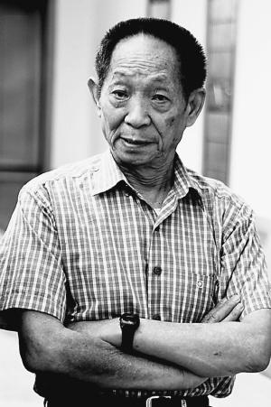
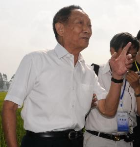

相关图片
- 


袁隆平（1930年9月-），江西省九江市德安县人，毕业于西南农学院（现西南大学），中国杂交水稻育种专家，中国研究与发展杂交水稻的开创者，被誉为“世界杂交水稻之父”。
1995年当选中国工程院院士，2000年获得国家最高科学技术奖，2006年当选美国国家科学院外籍院士。袁隆平先后成功研发出“三系法”杂交水稻、“两系法”杂交水稻、超级杂交稻一期、二期，与此同时，提出并实施“种三产四丰产工程”。2018年被党中央、国务院授予改革先锋称号。
1930年9月7日，袁隆平出生于北京协和医院。
1931年至1936年，随父母居住北平、天津、江西九江、江西赣州、湖北汉口等地。
1936年8月至1938年7月，在汉口扶轮小学读书。
1938年8月至1939年1月，在湖南省弘毅小学读书。
1939年8月至1942年7月，在重庆龙门浩中心小学读书。
1942年8月至1943年1月，在重庆复兴初级中学读书。
1943年2月至1944年1月，在重庆赣江中学读书。
1944年2月至1946年5月，在重庆博学中学读书。
1946年8月至1948年1月，在汉口博学中学读高中。
1947年暑假，读高中一年级时获汉口赛区男子百米自由泳第一名；获湖北省男子百米自由泳第二名。
1948年2月至1949年4月，在南京中央大学附中读高中（今南京师范大学附属中学）。
1949年8月至1950年10月，在重庆北碚夏坝的相辉学院农学系读书。
1949.08—1953.08 西南农学院农学系农作物专业学习。
1950年11月至1953年7月，院系调整，并入重庆新建的西南农学院农学系，续读3年至毕业。
1951年7月，袁隆平在西南农学院报名参加空军，体检、政审合格，后因在校大学生更需参加经济建设，而未入伍，继续留校学习。
水稻研究1953年8月，袁隆平毕业于西南农学院（现西南大学）农学系。服从全国统一分配，到湖南省怀化地区的安江农校任教。同年被分配到偏远落后的湘西雪峰山麓安江农校教书。
1953.08—1971.01 湖南省安江农业学校教员。
1960年7月，他在农校试验田中意外发现一株特殊性状的水稻。他利用该株水稻试种，发现其子代有不同性质。因为水稻是自花授粉的，不会出现性状分离，所以他推论该为天然杂交水稻。随后他把雌雄同蕊的水稻雄花人工去除，授以另一个品种的花粉，尝试产生杂交品种。
1961年春天，他把这株变异株的种子播到创业试验田里，结果证明了1960年发现的那个“鹤立鸡群”的植株，是“天然杂交稻”。他当时是一个安江民校的教师，但面对当时严重饥荒，他立志用农业科学技术击败饥饿威胁，从事水稻雄性不育试验。
1964年7月5日，他在试验稻田中找到一株“天然雄性不育株”，经人工授粉，结出了数百粒第一代雄性不育株种子。
1965年7月，袁隆平又在14000多个稻穗中逐穗检查到6株不育株，并在此后两年播种中，共有4株成功繁殖了1～2代。其研究彻底推翻由传统经典理论米丘林、李森科的“无性杂交”学说，并推论水稻亦有杂交优势。通过培育雄性不育系、雄性不育保持系和雄性不育恢复系的三系法途径来培育杂交水稻，可以大幅度提高水稻产量。
1964年2月22日，与农技干部邓则结婚。
1964年到1965年，两年的水稻开花季节里，他与科研小组在稻田进行杂交育种试验。后在稻田里找到了6株天然雄性不育的植株。经过两个春秋的观察试验，对水稻雄性不育材料有了较丰富的认识，根据所积累的科学数据，在大学毕业工作12年左右的他，发表在1966年第17卷第4期《科学通报》上。
1965年7月，又在安江农校附近稻田的南特号、早粳4号、胜利籼等品种中，逐穗检查14000多个稻穗，连同上年发现的不育株，共计找到6株。经过连续两年春播与翻秋，共有4株繁殖了1～2代。
1966年2月28日，发表第一篇论文《水稻的雄性不孕性》，刊登在中国科学院主编的《科学通报》半月刊第17卷第4期上。5月，国家科委九局局长赵石英同志，获悉袁隆平发表的《水稻的雄性不孕性》一文后，引起高度重视，以科委九局名义致函湖南省科委与安江农校，支持袁隆平的水稻雄性不育研究活动，指出这项研究的意义重大，如果成功，将使水稻大幅度增产。[11]6月，文化大革命开始，袁隆平遭受冲击，水稻雄性不育试验被迫中断。
1967年4月，袁隆平起草“安江农校水稻雄性不孕系选育计划”，呈报省科委与黔阳地区科委。6月，由袁隆平、李必湖、尹华奇组成的黔阳地区农校（安江农校改名）水稻雄性不育科研小组正式成立。
1968年4月30日，袁隆平将珍贵的700多株不育材料秧苗，插在安江农校中古盘7号田里，面积133平方米。5月18日晚上，中古盘7号田的不育材料秧苗，被全部拔除毁坏，成为未破的谜案。袁隆平心痛欲绝。事发后第4天才在学校的一口废井里找到残存的5根秧苗，继续坚持试验。
1969年冬，袁隆平、李必湖、尹华奇等到云南省元江县加速繁殖不育材料。
1970年夏，袁隆平从云南引进野生稻，拟在靖县（安江农校又搬迁到了靖县）做杂交，后因没有进行短光照处理而未成功。秋季，袁隆平带领科研小组李必湖、尹华奇来到海南岛崖县南江农场进行三季水稻实验条件良好的海南，进行研究试验，向该场技术员与工人调查野生稻分布情况。
1971年春，湖南省农业科学院成立杂交稻研究协作组，袁隆平调省农业科学院杂交稻研究协作组工作。
1973年，协作组通过测交找到了恢复系，攻克了“三系”配套难关。10月，袁隆平在苏州召开的水稻科研会议上发表了《利用“野败”选育三系的进展》的论文，正式宣告中国籼型杂交水稻“三系”已经配套。
1975年，袁隆平攻克了“制种关”，摸索总结制种技术成功。
1977年，袁隆平发表了《杂交水稻培育的实践和理论》与《杂交水稻制种与高产的关键技术》两篇重要论文。
2017年9月，在2017年国家水稻新品种与新技术展示现场观摩会上，袁隆平宣布一项剔除水稻中重金属镉的新成果：“近期我们在水稻育种上有了一个突破性技术，可以把亲本中的含镉或者吸镉的基因‘敲掉’，亲本干净了，种子自然就干净了。”
“杂交水稻之父”袁隆平及其团队培育的超级杂交稻品种“湘两优900（超优千号）”又创亩产纪录，经第三方专家测产，该品种的水稻在试验田内亩产1149.02公斤。
社会活动1978年2月，出席中国第五届人民代表大会；同年3月，出席中国科学大会并获奖；6月，出席湖南省教育工作者先进代表大会；10月，出席湖南省科学大会并获奖。
1978年10月，晋升为湖南省农业科学院研究员。
1979年4月，出席菲律宾国际水稻研究所召开的科研会议，会上宣读他用英文写的《中国杂交水稻育种》的论文并即席答辩，与会者一致公认中国杂交水稻研究处于领先地位。
1980年5月，袁隆平应美国邀请赴美进行杂交稻制种技术指导，10月，赴菲律宾国际水稻研究所进行技术指导与合作研究。
1982-1986年，每年去菲律宾国际水稻研究所1～3次进行合作研究。
1983年8月，第二次应美国邀请赴美国考察杂交稻试种情况并进行技术指导。
1985年，袁隆平发表了《杂交水稻超高产育种探讨》一文，提出了选育强优势超高产组合的四个途径，其中花力气最大的是培育核质杂种。可是多年的育种实践，却没有产生出符合生产要求的组合。他便果断迅速地从核质杂种研究中跳了出来，向新的希望更大的研究领域去探索。
1986年，培育成杂交早稻新组合威优49，4月，应邀出席在意大利米兰附近召开的“利用无融合生殖进行作物改良的潜力”国际学术讨论会。10月，世界首届杂交水稻国际学术讨论会在长沙召开，袁隆平在会上作了《杂交水稻研究与发展现状》的专题学术报告，并提出了今后杂交水稻发展的战略设想，得到与会专家、学者的赞同，并写进了会议文件。
1989年9月25日～10月3日，应邀出席在北京召开的中国劳动模范和先进工作者表彰大会，参加国庆40周年观礼活动。
1991年8月14日～8月22日，应日本学会邀请，赴日本作两系杂交稻研究新进展学术报告。9月29日～10月10日，在美国参加洛克菲勒基金年会。
1992年1月13日～1月15日，出席并主持在湖南长沙召开的国际水稻无融合生殖会议。4月20日～4月27日，率中国代表团参加在菲律宾国际水稻研究所召开的第二届杂交水稻国际学术讨论会。7月28日～8月4日，受联合国粮农组织委托赴印度作杂交水稻方面的学术报告。10月22日～11月13日，受联合国粮农组织委托以首席顾问身份赴印度指导杂交水稻技术3星期。
1993年4月10日～4月22日，赴美国布朗大学出席菲因斯特拯救饥饿奖仪式，夫人邓则应邀陪同前往。5月19日，受聘为湖南省留学人员联谊会顾问。5月20日受聘为国务院学位委员会审核博士生指导教师通讯评议专家组成员。11月17日～12月10日，受联合国粮农组织委托第三次赴印度传授杂交水稻技术。12月30日，撰写《对大面积推广玉米稻要持慎重态度》一文，由湖南省农业厅以湘农函（1993）种字113号转发，对于稳定湖南粮食产量起到重大作用。
1994年2月28日～3月12日，赴美国休斯敦与美国水稻技术公司草签合作开发两系杂交稻协议。5月14日，赴印度尼西亚参加洛克菲勒基金会年会。9月23日～9月25日，袁隆平在湖南长沙主持中国杂交水稻专家顾问组组长碰头会。
1995年2月，赴美水稻技术公司参加学术年会。
1996年7月，出席在湖南省张家界市召开的“863”计划重大技术项目复审会议。8月，出席在四川省双流县举行的两系杂交稻现场会。9月11日，出席由中宣部与中华中国总工会在北京人民大会堂联合举行的中国科技十杰表彰大会，发表题为《攀登杂交水稻研究新高峰，解决中国人吃饭问题是我的毕生追求》的演讲。10月18日，出席由何粱何利基金会在北京举办的学术报告会，作《从杂交稻育种领域看粮食增产潜力，中国有能力解决吃饭问题》的学术报告。11月，出席在杭州举行的东亚地区洛克菲勒基金会水稻生物技术国际学术讨论会并作学术报告；参加在印度举行的“第三届杂交水稻国际会议”。12月，出席姜春云副总理主持召开的农业专家座谈会，共商农业丰收大计。
1997年1月，出席由农业部召开的五省五大作物工作会议。3月，赴美国休斯敦出席水稻技术公司年会，应邀赴缅甸指导杂交水稻生产。4月，出席在北京举行的“第二届中国国际农业科技年会国际种业学术讨论会”；在安徽农科院举办的“863”计划1997年两系杂交（粳）稻技术培训班上讲课。9月，在长沙出席并主持“农作物两系法杂种优势利用国际学术讨论会”，作了题为《农作物两系法杂种优势利用的现状与前景》的学术报告。11月，参加在武汉召开的“863”计划生物领域农业专题年会；在《杂交水稻》第6期上发表《杂交水稻超高产育种》的重要论文。
1998年8月，应邀赴北戴河休假期间，向朱镕基总理呈送“申请总理基金专项支持超级杂交水稻选育”的报告，得到高度重视。9月，应邀赴埃及参加第十九届水稻国际委员会会议；接受香港凤凰卫视中文台节目主持人杨澜采访。10月，参加在上海举行的“第六届国际水稻分子生物学会议”。11月，出席在广西北海举行的“863”计划生物领域“九五”计划课题年度报告会议。
1998年12月，出席在广东肇庆举行的“863”计划“超级杂交稻”项目会议。
1999年4月底，出席由中国总工会、中央电视台举办的“五一”晚会，并作为嘉宾登台向中国观众致意。6月，赴浙江武义主持“两系杂交稻”现场会；“袁隆平农业高科技股份有限公司”正式挂牌成立。12月，出席由中宣部、科技部、人事部联合在北京人民大会堂隆重举行的中国“杰出专业技术人才”表彰大会，荣获“杰出专业技术人才”金质奖章，发表题为《发展杂交水稻，造福世界人民》的演讲；出席在深圳举行的“863”计划生物领域农业专题1999年年会。
2000年3月底至4月初，赴菲律宾国际水稻研究所参加水稻科研会议，宣读《超级杂交稻育种》论文，并对湖南杂交水稻研究中心设在菲律宾的杂交稻试种基地进行现场考察；7月5日至7月7日，袁隆平赴安徽安庆主持召开中国两系优质杂交早稻示范现场会。8月25日、9月10日在湖南郴州主持中国超级杂交稻现场验收会，超级稻第一期目标达标。同年袁隆平主持的国家“863”计划两系法杂交水稻研究项目通过科技部的验收。
2001年5月，分别赴越南参加联合国粮农组织主持的“在亚洲加快大规模杂交水稻发展的政策支持会议”，孟加拉参加国际水稻所及亚洲发展银行杂交水稻项目的第四次技术委员会会议。7月赴香港中文大学考察并作学术报告。12月，经国家主席江泽民推荐，袁隆平院士赴委内瑞拉考察推广杂交水稻的可能性与前景。
2002年1月，第二届“袁隆平农业科技奖”颁奖。7月，分别赴香港参加在香港中文大学举行的生物技术及作物改良会议；赴泰国曼谷参加由联合国粮农组织主持的“第二十次国际水稻委员会会议。
2003年3月，赴乌拉圭参加学术会议，并作“杂交水稻在中国的发展”学术报告。
2004年3月，出任国家杂交水稻工程技术研究中心天津分中心首席科学家。8月，袁隆平院士应马来西亚元首基金会邀请对马来西亚进行考察访问。
2005年，袁隆平指导团队研究人员通过穗茎注射法，将外缘基因组导入了杂交水稻亲本品系。这项成果发表在《农业科学与技术》（英文版）6卷第3期上。10月19日上午，应外交部邀请，袁隆平在外交部第四期大使参赞学习班上作有关杂交水稻的报告。
2006年9月20日～21日，袁隆平院士出席由中宣部、中国伦理学会、湖南省委宣传部、长沙市委举办的第三届中国公民道德论坛并发言。
2006年，袁隆平指导团队研究人员在《中国科学》（C辑 生命科学）36卷第4期上发表文章，公布通过基因枪将抗真菌病的基因导入到杂交稻中，获得了抗稻瘟病的材料。
2007年3月16日，袁隆平赴香港中文大学联合书院参加“杰出学人到访”活动，并作学术报告。4月27日至5月7日，赴美国华盛顿参加美国科学院年会正式就任美国科学院外籍院士，并顺访休斯敦美国水稻技术公司和旧金山孟德尔公司。
2008年6月担任中国08北京奥运会001号火炬手。

2009年8月28日，回母校西南大学进行学术演讲。
2010年9月6日晚，湖南卫视为袁隆平院士和正在此间举行的首届中国杂交水稻大会献上了一台名为《为了大地的丰收》的文艺晚会。
2011年1月，《中国国家形象片-人物篇》杰出代表人物之一。[30]9月19日，指导的超级稻第三期目标亩产900公斤高产攻关获得成功，湖南隆回县百亩试验田亩产达到926.6公斤。
2012年8月23日，在青岛农业大学做了题为“发展杂交水稻，保障粮食安全”的主题报告，并被青岛农业大学聘请为学校高级顾问。
2015年9月，袁隆平卸任湖南杂交水稻研究中心主任一职。
2016年10月，袁隆平担任青岛海水稻研究发展中心主任和首席科学家。
2017年7月，袁隆平担任青岛海水稻学院首席教授。
2017年10月10日，袁隆平返回母校西南大学颁发首届西南大学袁隆平奖助学金，主要奖励农业学科相关的品学兼优的学生。经评审，10名农科类学生分获首届袁隆平奖学金特等奖和一二三等奖，获奖学生中包括5位博士、2位硕士和3位本科学生。
2018年5月，袁隆平带领的青岛海水稻研发中心团队对在迪拜热带沙漠实验种植的水稻进行测产，最高亩产超过500公斤。